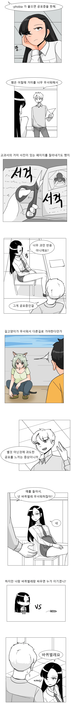
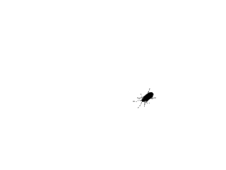
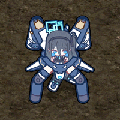
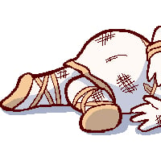

ㅇㅆㅇㅆ)여고생쟝에게 공포증을 설명하는 만화
댓글





맨몸으로 바퀴벌레는 힘들지...
눈딱감고 한번만 주먹으로 쳐봐 다음부턴 쉬움
그 한번이 너무 어렵지 ㅋㅋ
중간에 길고양이는 무서워서 피하는게 아니라 더러워서 피해야하는거 아닌가?
성인여자 공포증
야니네코 잘 그리시네..
그 혹시 입금 어디로 하면 되죠 잠깐 부탁 좀 드릴게 있어서 급합
야니네코 잘 그리시네..
그 혹시 입금 어디로 하면 되죠 잠깐 부탁 좀 드릴게 있어서 급함
얼마나 급하면 댓글을 두 번이나 썼냐
그게 공포야
쟝
이거봐 0.3탱크인 여고생도 지는데 내가 바퀴에게 지는게 부끄러운게 아니라니까